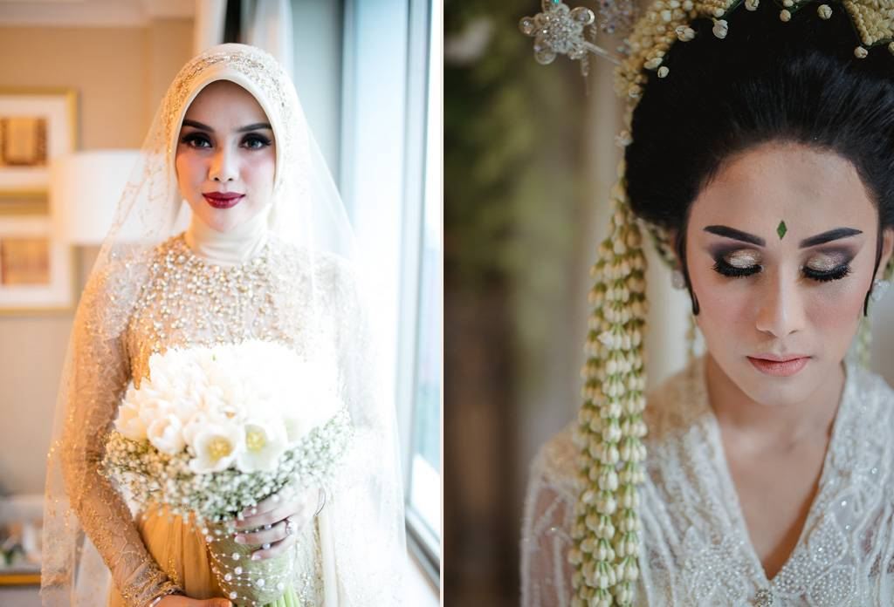
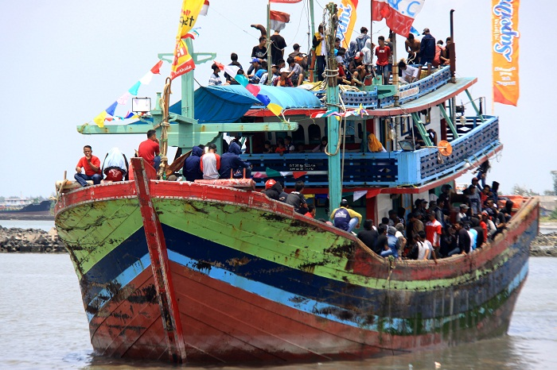
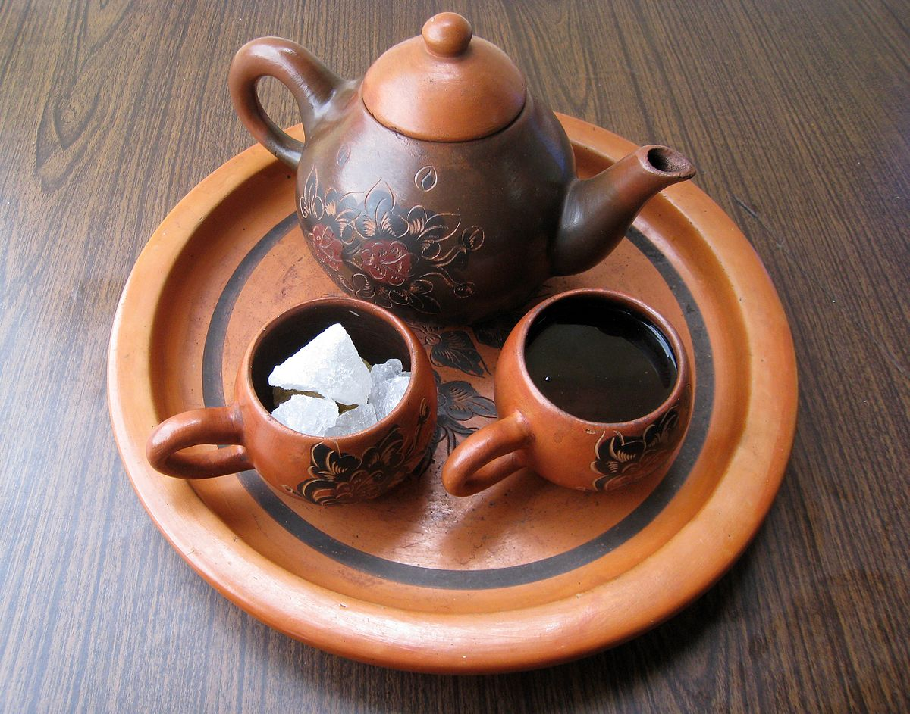
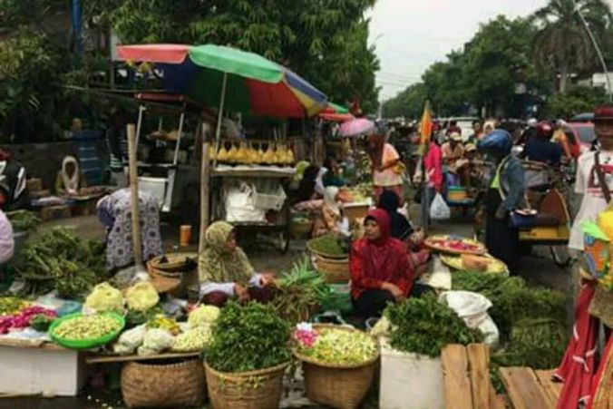
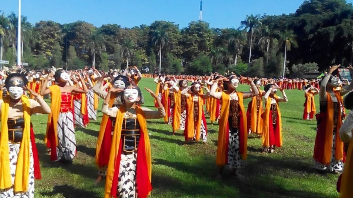
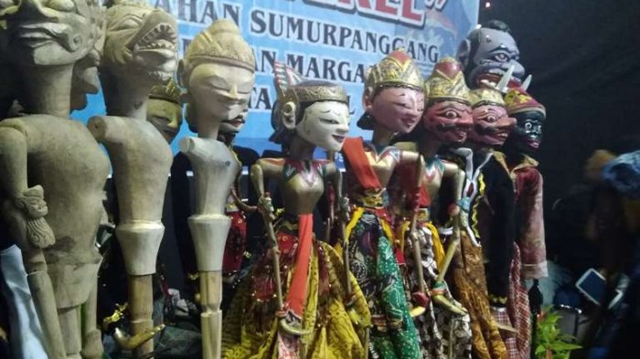
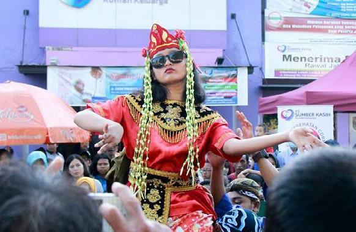

BUDAYA KOTA TEGAL
BUDAYA
Tradisi Mutih Pada Calon Pengantin Wanita

Tradisi ini hanya dilaksanakan oleh calon pengantin Wanita. Biasanya calon pengantin tidak diperbolehkan menyantap lauk pauk yang enak, melainkan hanya boleh makan nasi putih dan tahu yang belum di goreng. Saat tradisi ini berlangsung, kedua mempelai juga tidak diperbolehkan untuk bertemu. Namun, mereka tetap diperbolehkan berkomunikasi lewat ponsel, dan akan dipertemukan kembali setelah Ijab Qobul. bertujuan agar kedua calon pengantin tampil lebih cantik setelah di make up, sehingga calon pengantin pria menjadi terpesona setelah melihat calon pasangannya.
Tradisi Sedekah Laut Pada Penghujung Tahun

Di penghujung tahun, warga ramai membuat gunung sedekah bumi yang berisi buah-buahan dan sayur mayur seperti apel, pisang, jeruk, mangga, jambu biji, belimbing, terong, cabai, ketimun, pare, kacang panjang, dan lain-lain. Biasanya kepala sapi diletakkan di tengah gunung. Kemudian gunung tersebut akan diangkut dengan kapal besar dan dibuang ke tengah laut. Banyak warga yang menaiki kapal, dari anak-anak hingga orang tua semuanya ikut bergabung. Setelah kapal kembali, ada acara penyambutan dengan respon dari dangdut orjen. Tradisi ini merupakan wujud rasa syukur masyarakat kepada Allah SWT yang telah melimpahkan rejeki kepada masyarakat Kota Tegal.
Minum Teh Poci Bersama

Mampir ke Tegal, jangan sampai melewatkan teh poci. Sering disebut dengan moci, tradisi ngeteh ini sudah berlangsung sejak lama. Penduduk setempat biasanya moci saat sarapan atau sore hari, ditemani jajanan ringan seperti tahu aci.
Teh disajikan dalam pot tanah liat dan set cangkir. Daun teh kering wangi melati diseduh dengan air mendidih. Lalu, masukkan gula batu ke dalam cangkir. Perlahan gula ini akan meleleh dan menyatu dengan panasnya teh, menghasilkan rasa wasgitel alias harum, panas, legi, dan kental.Tradisi moci juga dilakukan pada saat acara besar dan perayaan penting. Namun, menyeruput teh bersama menjadi tempat yang tepat bagi penghuni untuk berkumpul dan mengobrol, sekaligus menciptakan suasana yang bersahabat.
Lebaran Kota Tegal

Warga kota Tegal biasanya akan menyambut lebaran dengan tradisi prepegan. Biasanya sehari menjelang Lebaran, Masyarakat kota Tegal akan berbondong-bondong ke pasar dengan berjalan kaki untuk berbelanja berbagai kebutuhan untuk menjamu tamu.
Selama prepegan, pasar sangat sibuk bahkan berdesak-desakan. Saat liburan, masyarakat Kota Tegal akan mendatangi rumah kerabat jauh (nyadran). Nyadran biasanya dilakukan dengan membawa kue atau sirup untuk diberikan kepada kakaknya. Biasanya masyarakat kota Tegal akan membuat sayur kupat dan opor ayam
Tari Khas Tegal Endel

Tari Endel merupakan salah satu tarian khas Tegal dimana penarinya menggunakan topeng dengan enam gaya yaitu topeng endel, kresna, panji, patihan, lanyapan alus, dan kelana dan terdapat juga topeng tambahan yaitu punakawan dan beberapa topeng lainnya yang disesuaikan dengan kebutuhan cerita. Pertunjukan biasanya berlangsung 3-4 jam dan diiringi oleh 10 pangrawit, seorang sindenm dan seorang dalang.
Wayang Golek Cepak

Bukan hanya orang Sunda yang mengenal wayang golek, tapi juga masyarakat Tegal. Sering disebut juga Wayang Golek Cepak Tegalan, bahan pembuatan boneka wayang ini dari kayu kedondong jaran. Kayu dinilai berkualitas baik dan tahan lama. Sedangkan untuk mewarnai boneka menggunakan cat semprot pada kendaraan roda empat agar boneka terlihat lebih cantik.
Keberadaan wayang golek ini tak lepas dari tangan dingin Ki Enthus Susmono, dalang yang juga Bupati Kabupaten Tegal. Ia kemudian menamakan wayang golek Lupit dan Slenteng dan membuat dua maskot daerah wayang.
Sintren

Seni tari Sintren tradisional cukup populer di masyarakat pesisir utara Pulau Jawa, seperti Indramayu, Cirebon, Brebes, Pekalongan, dan Tegal. Nuansa magis, tarian ini menggambarkan kisah cinta tak berizin Sulasih dan Raden Sulandono. Namun, keduanya dipertemukan kembali di alam gaib oleh Dewi Lanjar, ibu Sulandono.
Berawal dari cerita ini, saat Sintren digelar, penari yang masih suci itu kerap dirasuki arwah bidadari Dewi Lanjar, setelah pawang membacakan mantra. Selain itu, alat musik yang terbuat dari gerabah dan kipas bambu menghasilkan suara khas yang membuat pertunjukan semakin menarik.
Copyright © 2022 - Ilhan, Akbar, Yori, Kuncoro, All Rights Reserved.